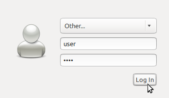

Guía de inicio rápido para la internacionalización de OSGeo-Live¶
Cambiando de idioma¶
OSGeo-Live está traducida a varios idiomas. Para cambiar entre ellos debe:

- Cerrar sesión
- Seleccionar user=»user», password=»user»
- Seleccionar otro idioma desde el menú del panel superior
- Pulsar el botón de Iniciar sesión.
- Repetir el proceso si es necesario o si desea cambiar de idioma otra vez.
{kind=link}
Los menús del sistema y muchas de las aplicaciones aparecerán en el lenguaje elegido. Si un programa en concreto continúa mostrándose en Inglés eso es porque no dispone de traducción. Por favor, considera apoyar la traducción del mismo a tu idioma. Puedes contactar directamente con los responsables del proyecto para obtener más información.
Para idiomas adicionales consulta en el menú principal (requiere conexión a Internet).
Soporte de distribuciones de teclado¶
El soporte de distribuciones de teclado está incluido, pero necesitas configurar el sistema para un teclado en particular. Para cambiar las preferencias debes abrir Preferences –> Keyboard Input Methods desde el menú principal y hacer clic en la pestaña Input Method. A continuación hacer clic en Customize active input methods y entonces en el botón Select an input method. Ahora hacer clic en el botón Add de la derecha para añadir la nueva distribución y entonces Cerrar la ventana de preferencias de IBus.
Ahora ya puedes hacer clic en el icono del teclado en la barra inferior del escritorio para seleccionar la distribución de teclado activa.